After the registration of the project setting, you can start digitising your specimens. To do so, first it is neccessary to import the geometry of the specimens. At the moment, OBJ file format is the only acceptable format for ArchaeoToolbox. From the file menu, select "Import Obj" and navigate to the location of the mesh. On this stage, you are able to see the imported geometry under "Renderer" tab. Given the setting is done, by importing a mesh, the (mesh) digitisation tool will be activated. There is also an option for digitising DICOM stacks, however, it is still under the developement and the option is diabled for now. To proceed with landmark digitisation, push "Digitise Mesh" button.
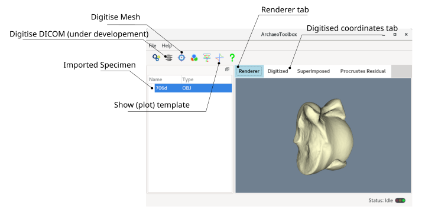
The landmark picking and interaction in digitiser is identical to the template digitiser: Ctrl + left-click will pick landmarks or curve/surface control points. Shift + left-click will remove (delete) the picked object, and Ctrl + middle button will move (pan) around the picked object. The below figure depicts an overview of the landmark digitiser. Notice that "Slide semi-landmark" button is grayed out. After digitisation of curve/surface semi-landmarks (if you have any, it depends on your project setting), this option will be activated.
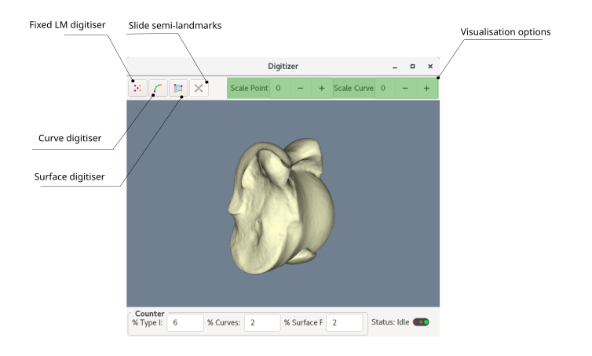
1- Fixed landmarks digitisation
After clicking (activating) the fixed landmark digitiser, a separate tool ribbon will be appear, and you will be able to ctrl+right-click at any location on the surface of the mesh to register landmarks. The counter ribbon at the bottom of the digitiser will keep track of the number of remaining landmarks. If you miss-placed a landmark, you can delete it (Shift + right-click) or move it to the correct location (Ctrl + mouse middle-button). Fixed landmarks are colored red. It is crucial to remember that by definition, the succession of landmarks and their location must follow the template. Therefore, always look at the template (by pushing "Plot Template" button) and double-check the digitised landmarks.
On the fixed LM digitiser ribbon, there is a checkbox named "Show the largest diameter". If you have a geometry with open edges (e.g. a limpet shell), and you want to put fixed landmarks at the largest diameter of the said geometry, you can check the box. It will help you to highlight the suitable locations consistently through your template and specimens. If your geometry doesn't have a loose edge, you will recieve a warning, and nothing will happen after that.
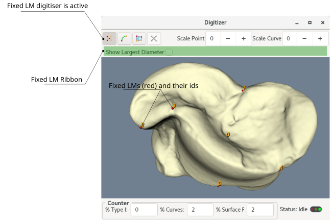
2- Curve semi-landmarks digitisation
After activating the curve digitiser, similar to the template curve digitisation, a separate tool ribbon will be appear and you will be able to ctrl+right-click at any location on the surface of the mesh to register curve CONTROL POINTS, NOT LANDMARKS! Curve landmarks are colored green, and will be digitised automatically based on equidistant intervals across the curve. The curve is a parametric curve, and its control points are colored purple. A curve can be a closed or open curve. For complex curves, it is reccomended to start digitising it as an open curve, then close it at the end. You can delete or move control points, but you cannot interact with the semi-landmarks directly. In addition, it is crucial to remember that each curve has a direction (equivalend of clockwise or anti-clockwise in 2D), and you must keep it identical to the template curve(s) direction.
After digitising a curve, if you have multiple curves to digitise, you must click "Add a curve" and repeat the same process again. You can go back to your previously digitise curve to modify it (its control points) by browsing the curve index. Remember the indexing starts at 0. In addition, if you already digitised a surface patch, and you want to digitise a curve around the patch, you can digitise the curve using "From Surface" option, and selecting the corresponding index of the surface patch. Although, it is recommended to digitise curves first, and create surface patches from the curves. There is also a check box option in the curve digitising ribbon, named "Limit to Loose Boundaries". If you have a a geometry with open edges (e.g. a limpet shell), and you want to digitise a curve around the loose edge, you can check the box and the curve will be projected on the loose edge.
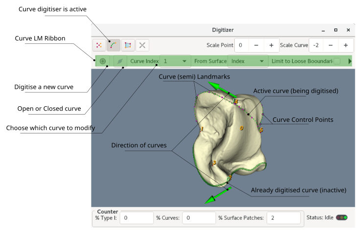
3- Surface semi-landmarks digitisation: Whole Surface
After activating the surface digitiser, a separate window will be popped, which is completly different from the template surface digitisation. The new window provides tools for registration. Unlike surface patches, the whole geometry landmarks are not structured. In order to make their relative position identical to template, one needs to register them using template (whole geometry) landmarks. This process is to some degree similar to the Procrustes superimposition. The major difference, however, is that Procrustes superimposition is only limited to the affine transformation but the registration includes elastic transformation as well. The elastic transformation is called morphing, so the registration process morphes a mesh into the template mesh. After the mesh is morphed, you can pick the locations closest to the template (whole surface) semi-landmarks and register their ids in the same order as the template.
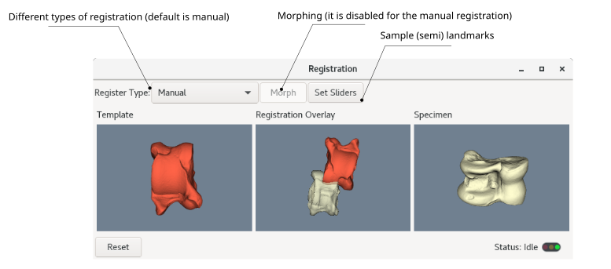
3-1 Different types of registration:
ArchaeoToolbox provides three different registration methods: 1- Manual, 2- Semi-automatic, and 3- Automatic registration. It worths mentioning that if you have fixed landmarks or curve semi-landmarks in your project, it is recommended to digitise them first and then proceed with the surface landmark digitisation. By doing so, you can use the automatic registration and save some time and effort, however, it is not mandatory.
3-1-1 Manual Registration
In the manual registration, the process of morphing is totally manual. To morph a mesh into the template manually, you must select corresponding locations in both template and the target mesh (non-analytical landmarks). These landmarks will serveonly for the registration process. You must continue the landmark picking process untill at the middle frame (Registration Overlay) specimen covers the template (i.e. morphes into the template). Under the hood, the manual registration uses thin plate spline to warp target mesh into the template. At any stage of registration, when you decide the morphing quality is acceptable, you can press "Set Sliders" to register surface (semi) landmarks. The figure below depicts the mentioned process in three steps.
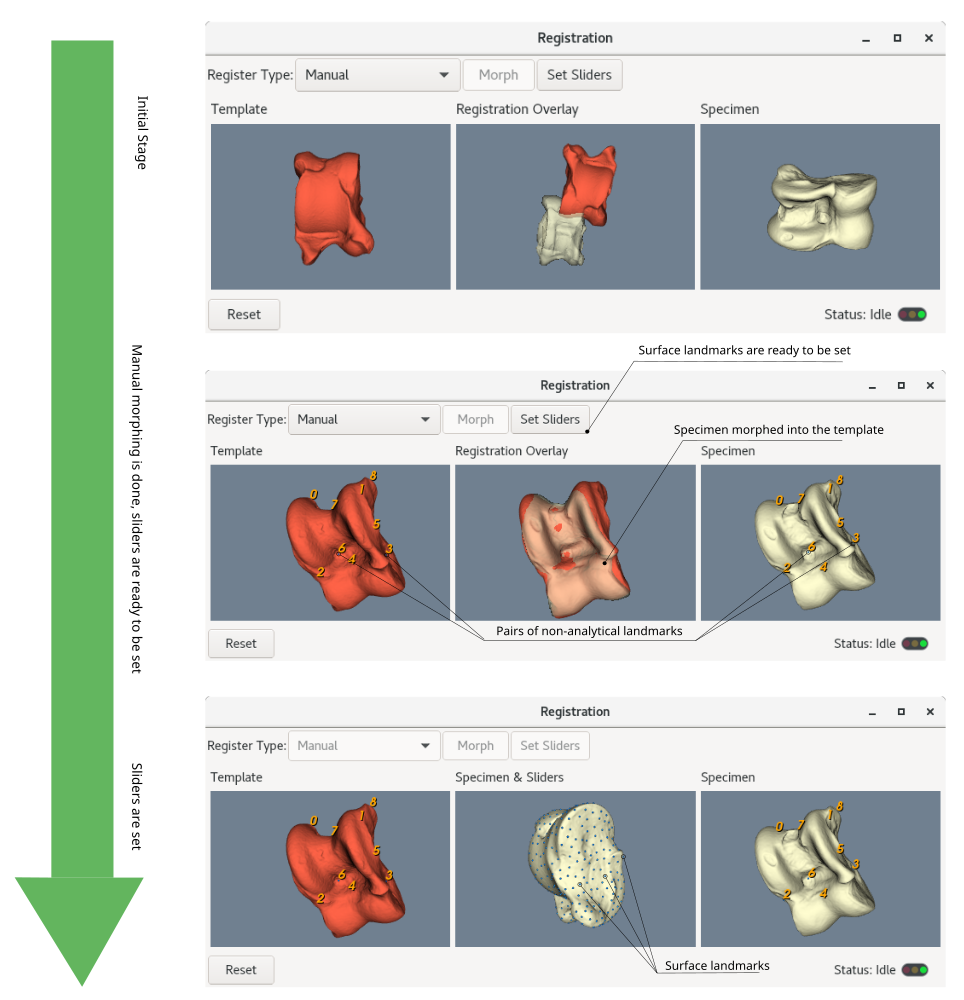
The manual registration is particularly useful when you want to use "whole geometry" instead of "patches" to register landmarks on AIOs (i.e. Areas of interest are too complex for NURBS interpolation). Unlike the template digitisation, specimen whole surface digitisation does not have the exclusion paint brush to define AOIs. Therefore, you have to morph your specimen into the template manually to assure the specimen AIOs are precisely overlapping the template AOIs. You can obtain the same results using automatic or semi-autoomatic regisration, however, the manual method is more prefarable since you have full control over the morphing process. You are the one who decides when the morphing quality is good enough.
3-1-2 Semi-automatic Registration
An alternative to the manual registration is semi-automatic registration. This approach has some similarities to the manual one, notably, the use of non-analytical landmarks. In the semi-automatic registration, you select the corresponding locations in both template and the target mesh only to align them. The alignment needs atleast three non-analytical landmark pairs. When the specimen and the template roughly aligned, you can push the "Morph" button, and the morphing process will be proceed automatically (following the coherent point drift algorithm). Remember the "Morph" button will be activated once you have three or more non-analytical landmarks. If the morphing result is not good enough, you can press the button again untill you get the favourable results. Then clicking the "Set Sliders" will digitise the surface (semi) landmarks. The figure below depicts the process in four steps. As a side note, if you cannot get the favourable morphing even after multiple attempts, you can reset the process (by pushing the Reset button) and choose manual registration.
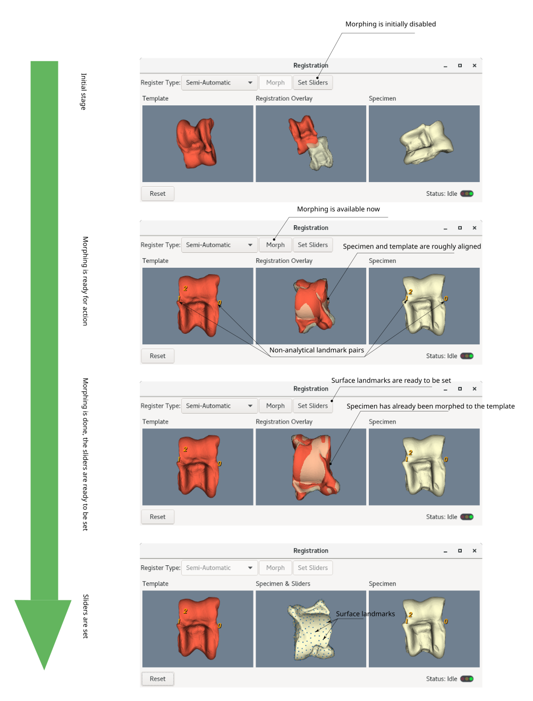
The semi-automatic registration is useful when your project does not have any fixed or curve landmarks, or for a reason, you decided to digitise surface (semi) landmarks first. If you have the fixed and curve (semi) landmarks already digitised, it is faster to use the automatic registration instead.
3-1-3 Automatic Registration
The automatic approach is another alternative for the registration. In the automatic scenario, alignment and morphing procedures are performed without user intervention (automatically). If the project includes fixed and/or curve (semi) landmarks, the automatic algorithm uses those landmarks to align the specimen on the template, and the coherent point drift morphing will be followed. Otherwise, the alignment will be done using the iterative closest point (ICP). Since ICP is sensitive to the initial position of specimen regrding the template, the best initial position is approximated by a bounding box alignment to minimise the Hausdorff distance between specimen and the template. The details of the pre-alignment algorithm can be found in two functions of the RegistrationThread.cpp file: BestBoundingBox and AlignBBoxToWorld. This pre-alignment, however, does not yield good results when the geometry is round and spherical or cylindrical. Therefore it is highly recommended to digitise the fixed and curve landmarks first, which resolve the alignmnt issue. If your project does not include fixed and/or semilandmarks, and the results of the automatic registration is not satisfactory, you are advised using semi-automated or manual registration. Once you select the automatic registration method, the morphing will start immidiately, however, you have an option to morph multiple times afterward (by clicking the Morph button) to improve the results. Remember that the morph button improve the results slightly, so if the initial morphing is a disaster, it can not fix it. The figure below depicts the automatic registration process.
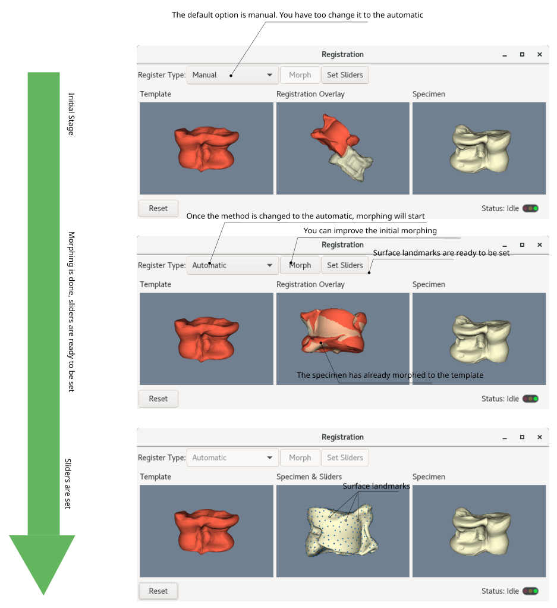
After setting the surface semi-landmarks, you can simply close the registration windows and proceed with the digitisation.
4- Surface semi-landmarks digitisation: NURBS Patches
The surface digitiser ribbon changes it's functionality drastically if you choose patches instead of whole geometry. In the case of surface patches, after activating the surface digitiser, a separate tool ribbon will be appear and you will be able to ctrl+right-click at any location on the surface of the mesh to register NURBS patches CONTROL POINTS, NOT LANDMARKS! When you release ctrl, a NURBS patch (colored golden yellow) will be created using the picked control points. You can resume the process by pressing ctrl again (which makes the NURBS dissapear), and picking control points or delete them, or even move them around. The surface sliders (semi-landmarks) will be created automatically by evaluating NURBS at equidistant intervals. The sliders are placed in a protective cage (colored purple), so when you interact with them (during the ironning procedure), they will keep their relative position. Each time you release the Ctrl, the mesh will be cut using the control points, and the interpolated NURBS will be projected on one of the cut pieces. You have to cycle through all available cut pieces and choose the one covering the AOI. Normally, mesh will be cut in two pieces and you have only two options to cycle through. However, sometimes the mesh has many small disconnected parts (if you didn't clean the mesh before the digitisation). It is possible to interact with the patch landmarks by activating the "Iron the NURBS". The interaction is limited to moving the landmarks around, and it is useful when the shape of a patch is complex and you want to untangle or spread the landmarks. After deactivating the iron, the active patch goes to the state of lock, and you cannot interact with it anymore. You can, however, unlock the patch and resume necessary modifications (if you desire to do so). If you have more than one patch, you can add the new one by pressing "Add a Surface".
It is crucial to mention that you can use previously digitised curves to define patches control points. Doing so will save time and make the digitisation process less prone to human error. Therefore, it is advicable to mark the boundariy of AOI with curve landmarks and then create patches using them. You can select the curve index to assign the curve for creating the patches. Similar to the curves, NURBS patches also have directional information (in the form of a blue arrow per each patch). It is needless to say, the direction of patches must follow their template counterparts. As mentioned before, everytime a NURBS patch is created, the mesh beneath will be cut. The reson behind is to avoid wrong projection during the sliding procedure. During the sliding, after each small slide, landmarks will be projected back onto the mesh surface. In some geometries with a thin width, the landmarks can be projected onto the wrong side of the geometry. To avoid this, the area of interest (AOI, which is defined by the boundary of NURBS patches) will be cut, and landmarks will be projected exclusively onto the cut AOI.
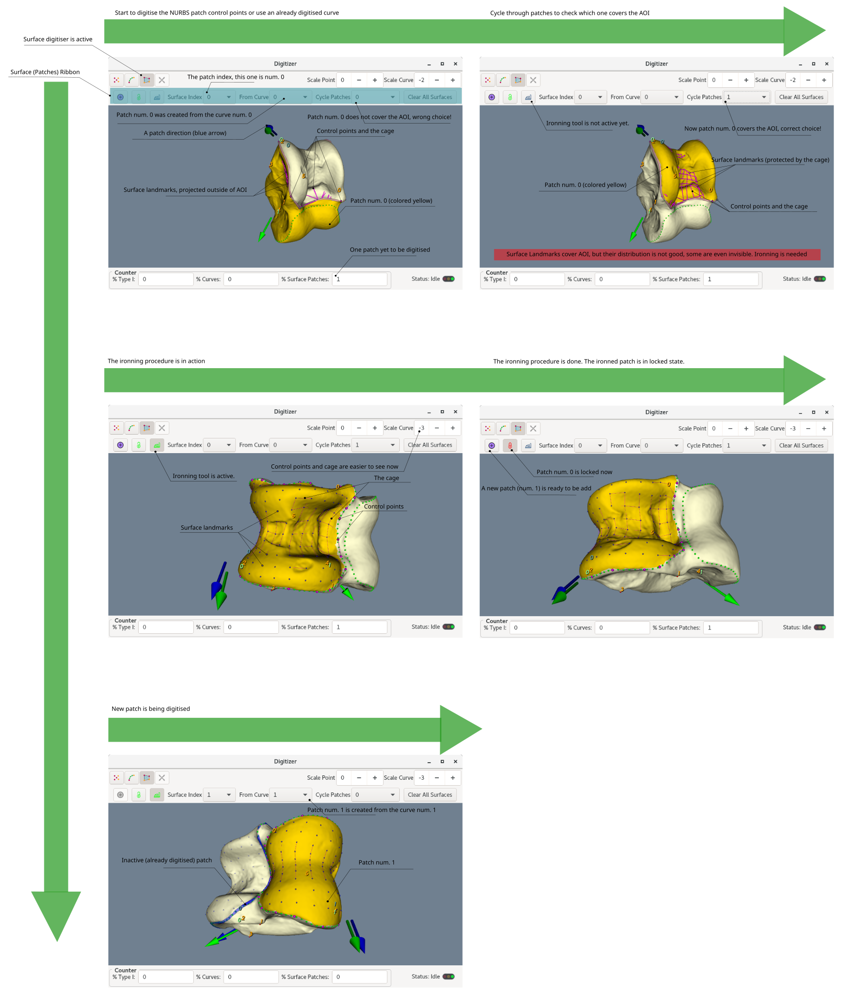
It is worth re-itterating that after digitising the control points (or alternatively, using a curve), you have to cycle through all created patches and choose the one covering the area of intrest (AOI). The figure below helps to detail cycling through patches. In the upper section, the correct patch was selected to create NURBS over the AOI. In the lower section, however, a wrong patch was selected, so the created NURBS does not cover the AOI. Ideally, number of created patches is two, although if you imported a non-cleaned mesh, you might face many more patches. In this scenario, you have to cycle through all to decide which one covers AOI.
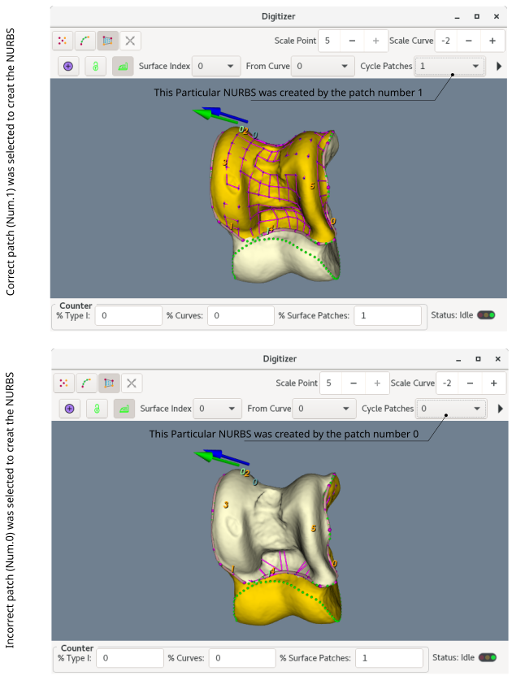
5- Sliding Semi-landmarks
If your project includes curve and/or surface semi-landmarks, it is obligatory to proceed with the sliding semi-landmarks. The "Slide Semi-landmarks" button is initially grayed out (deactivated). When you digitised all of the landmarks, however, it will be activated (given if your project has semi-landmarks). It is important to remember that when a digitising tool (fixed, curve or surface digitiser) is active, even if you completed the landmark picking, the sliding button remains deactivated until you get out of that digitising tool (by clicking the relevent button again). If you hover the mouse pointer over the "Slide Semi-landmarks" button, it will tell you if any of the digitising tool is still active. When it is activated, by pushing the "Slide Semi-landmarks" button, semi-landmarks start to slide to minimise the bending energy. When it is done, the digitisation process is over and you can close the digitiser. It is worth mentioning that the sliding process might take some time to accomplish, and the expended time exponentially correlates with the number of the semi-landmarks (surface and/or curve). Having 400-500 semi-landmarks will easily make the sliding process 4-5 minutes to complete.
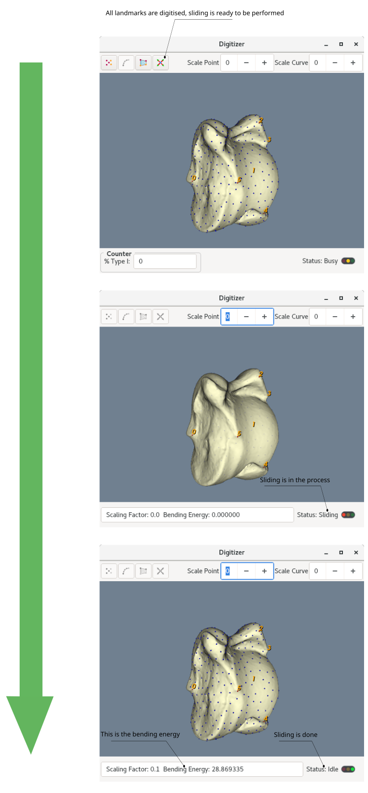
6- Finilising the digitisation
When the sliding process is over, or if you do not have any curve and surface semi-landmarks, when the fixed landmark have been digitised you can close the digitising window and the landmarks will be registerred automatically. Now in the main window, you can select the Digitized tab and check the coordinates of the digitised landmarks. The landmarks are also visible in the "Renderer" tab. The figure below depicts the new information which appear in the main window after digitisation. Beside of the renderer and digitised tabs, there are two others: superimposed and Procrustes residual tabs. They are empty at the moment, however, they will be populated after superimposition procedure. Remember that at any stage, you can save the digitised landmarks from the File menu, by selecting the "export Data". You have options to select any of the digitised (raw), superimposed or the residuals (magnitude or vector) information to export. The exported data is in .CSV format.
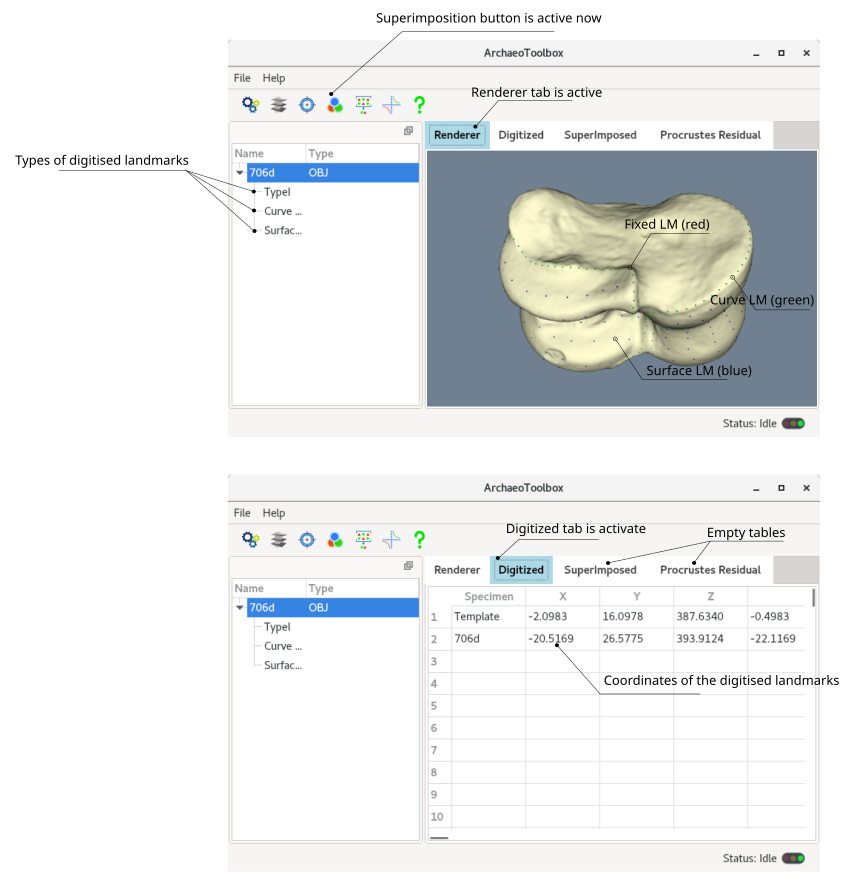